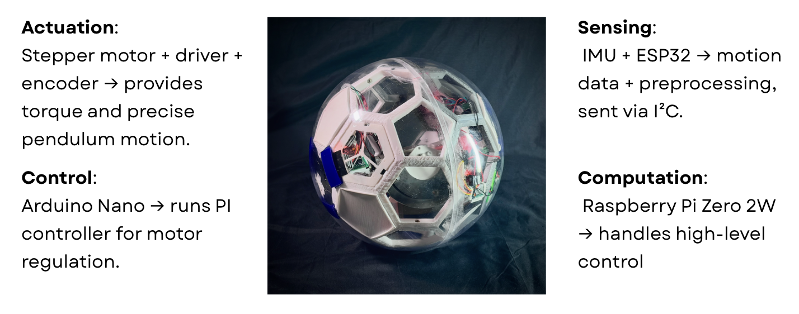
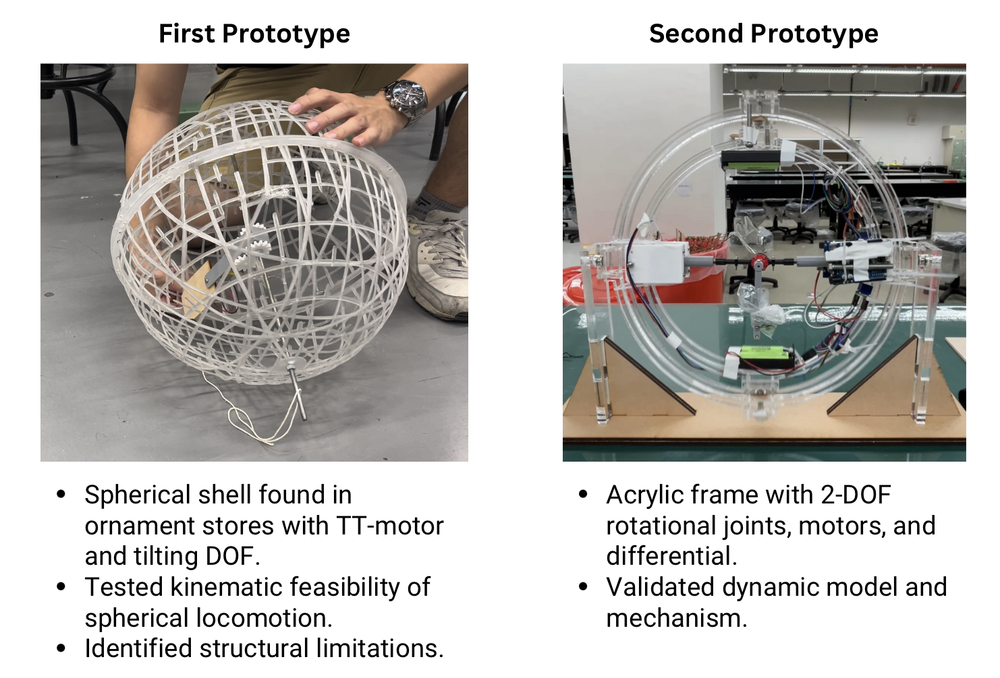
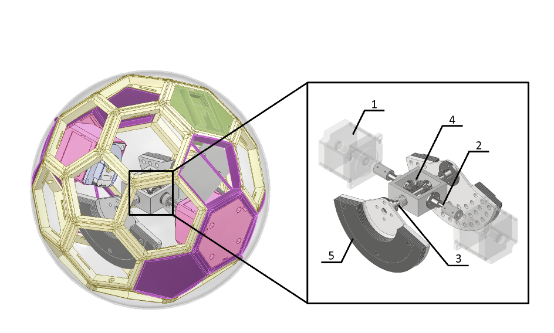
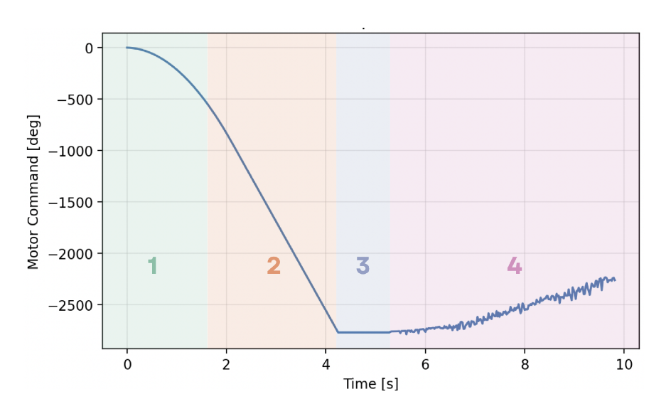
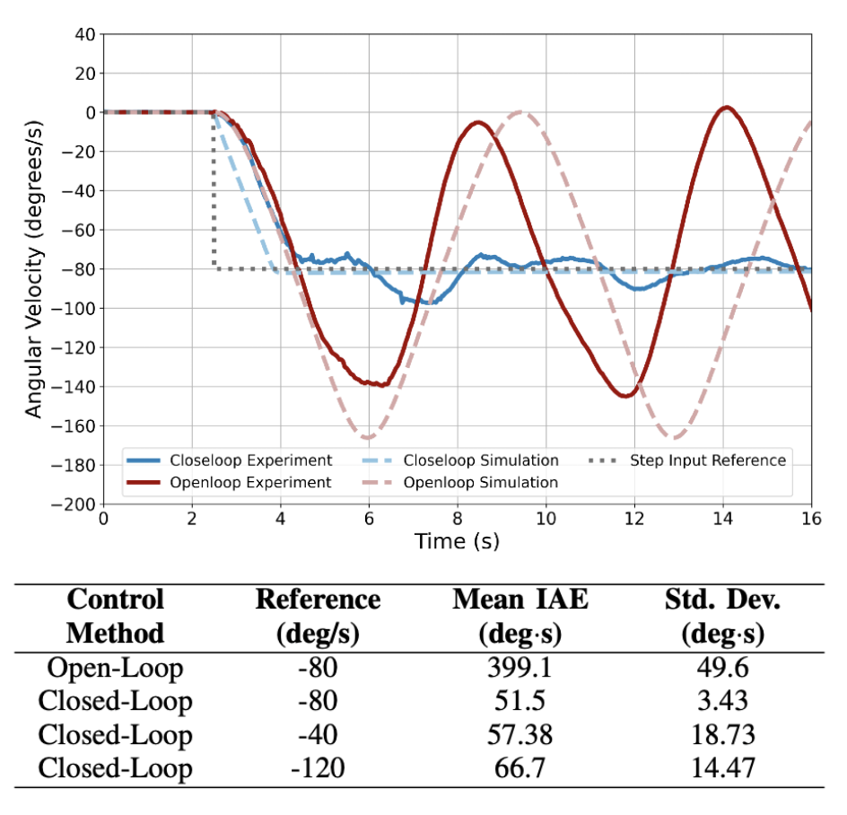
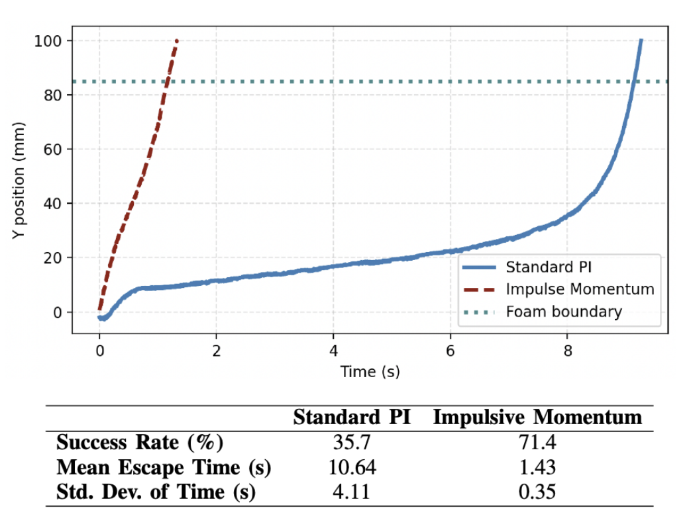
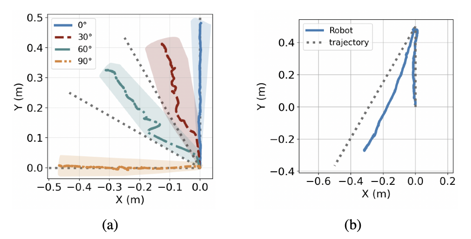

Dual‑Mode Spherical Robot
omni‑directional rolling • impulsive momentum actuation

OVERVIEW
- Two driving modes: Rolling for stable locomotion; Impulsive momentum for terrain escape with torque bursts.
- Mechanism: Dual-pendulum and bevel gear design enables omni-directional motion.
- Control: Low-level PI loop on Arduino; high-level controller switches modes.
- Expandability: Modular design for faster development and adaptability.
ITERATIONS

MECHANISM DESIGN

Mechanical structure: left view highlights modules (green: power, purple: control, pink: actuation); right view shows internal parts—1: motor, 2: main axis, 3: auxiliary axis, 4: bevel gear set, 5: pendulum.
IMPULSIVE CONTROL STRATEGY

Four-phase impulsive strategy: 1) spin-up, 2) cruise, 3) release, 4) closed-loop control.
PI CONTROL EXPERIMENT
PI CONTROL RESULT

IMPULSIVE MOMENTUM MODE
IMPULSIVE MOMENTUM RESULT

2D TRAJECTORY RESULTS

- Straight‑line maneuvers at 0°, 30°, 60°, and 90° validate omni‑directional rolling.
- 30° turn trajectory demonstrates sharp‑turn capability.
- Open‑loop paths track inverse‑kinematics commands along predefined lines.
SUMMARY
- Designed and implemented a dual‑mode pendulum‑driven spherical robot for omni‑directional rolling and self-rescue capability.
- Dynamics modeled with the Lagrangian method and verified in MATLAB/Simulink, matching experimental trends.
- Closed‑loop PI control reduced IAE by 87%, while impulsive actuation cut escape time by 7.4× and nearly doubled success rate.
- 2D trajectory tests confirmed omni‑directional locomotion, including sharp turns and side‑rolling.
- Future work: closed‑loop trajectory tracking, stronger actuation for escape, and modular payload integration.